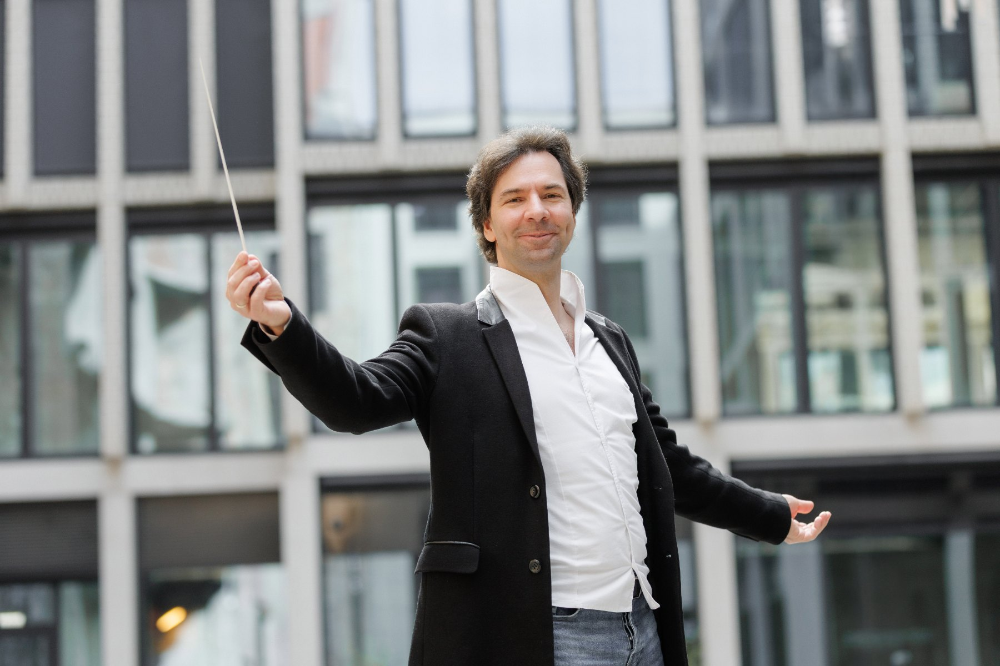
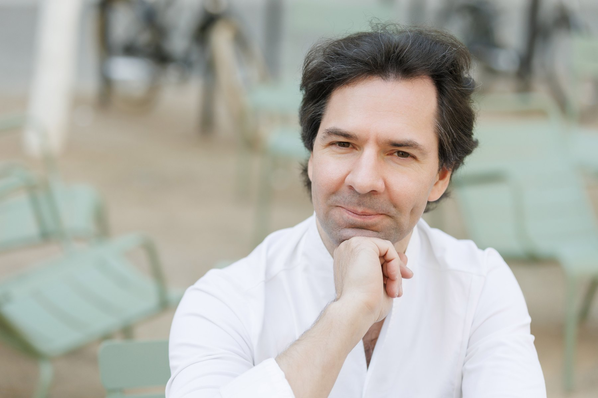
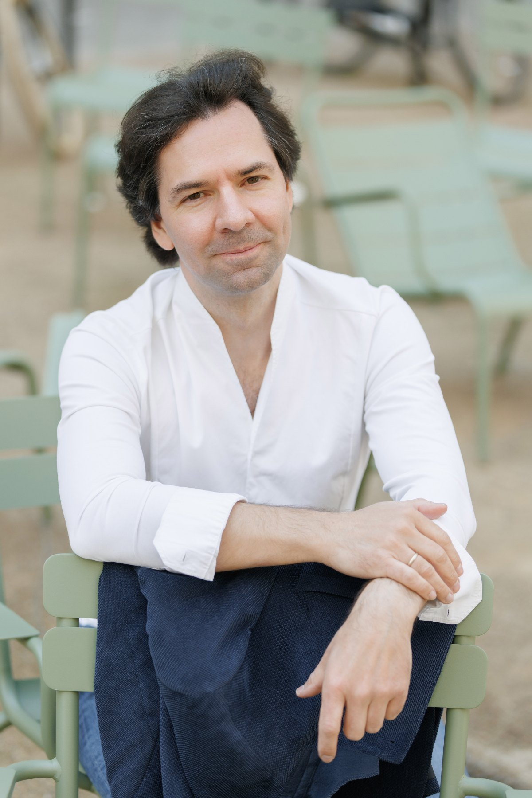

Музыка
Дирижёр и пианист. Вечера сезона, программы, репертуар, пресс-кит для организаторов.
- Вечера сезона
- Репертуар
- Для организаторов
Искусство слышать
Дирижёр и пианист. Executive- и командный коуч PCC ICF. Лекции на пяти языках.
Одно умение в трёх мирах: оркестр, зал, человек напротив.

Дирижёр и пианист. Вечера сезона, программы, репертуар, пресс-кит для организаторов.
«Как слушать музыку» и «12 музыкальных шедевров». Лекции на пяти языках, слушатели из 30 стран.
Первые лица, команды и конференции. Мастер-класс с живым оркестром как авторский формат.
Каждый концерт - нота на стане. Верхние ноты - дуэт с Марией Масычевой, нижние - сольные вечера. Наведите курсор.
Авторский формат на стыке двух профессий: руководители берут дирижёрскую палочку и работают с живым оркестром. Сначала теория и невербальное лидерство, затем репетиция, в которой стиль управления слышен в первой же фразе.

Приглашают сами вузы, а занятия идут внутри их учебных программ.
Мастер-класс «Чайковский» в программе Advanced professional training for conductors
май 2026«Metodi di coaching nell'educazione musicale», для профессоров и студентов
июнь 2025Напишите, что вам нужно: концерт, лекция, мастер-класс с оркестром или работа с командой.
Написать